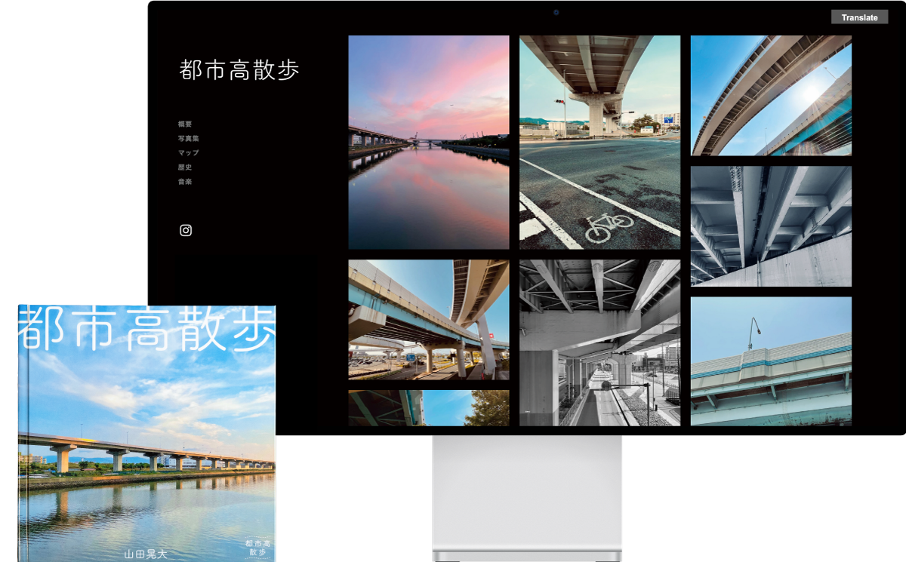
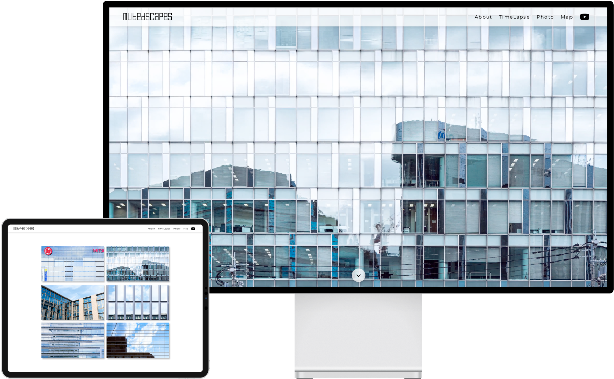

都市高速の造形美と老朽化を伝える
本研究で行なったのは、都市高速の造形的な美しさと老朽化の現状を伝えることを目的とした写真の撮影です。一般的にとっつきにくい印象のある社会問題のアプローチ方法に焦点を当て、Web上のメディアであるWebサイトと、紙媒体である写真集という異なる媒体を利用して情報を発信しました。

ビルに反射する景色を記録・表現する
本研究で行なったのは、「人工物であるビルと自然物である空」「その場に在り続けるビルと常に変化をし続ける空」という2つの視点での対比を目的としたタイムラプスと写真の撮影です。これらの相反する要素をタイムラプスや写真の中で融合させることで相乗効果が生まれ、新たな美しさを表現しました。
